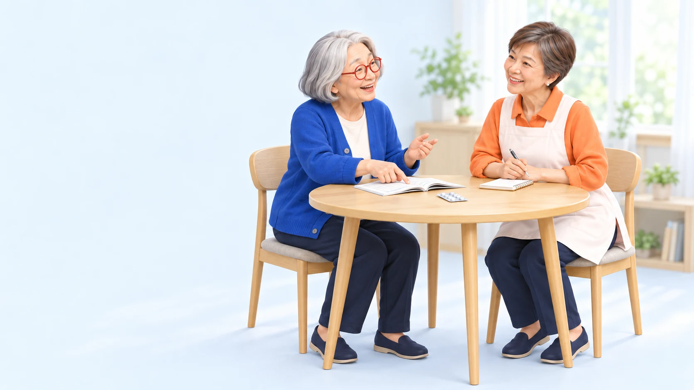

教える日。
昔から得意だったことが、
誰かの新しい楽しみになる。
支える人も、支えられる人も。
今日ここに来てよかったと思える一日を。
SHINING DAYは、東京都杉並区・善福寺の実家を起点に、小さなデイサービスと、地域で支え合う仕組みをつくるプロジェクトです。
遊びのルールを教える。話を聞く。誰かを笑わせる。
一人ひとりの「できる」が、自然につながる場所を目指しています。
もちろん、今日は見ているだけでも。
何かをすることが、ここにいる条件にはなりません。
現在は構想・開設準備の段階です。サービスの内容や利用条件は、これから具体化していきます。
勝った。負けた。もう一回。
そのあいだに、いくつもの役割が生まれる。
 それ、教えて。まかせて。
それ、教えて。まかせて。昔から得意だったことが、
誰かの新しい楽しみになる。
知らなかったことを知る。
年齢を越えて、先生が見つかる。
話を聞く。お茶を飲む。
自分のペースで過ごしていい。
登場する人物・場面は、構想を伝えるためのオリジナルイラストです。
カードをめくると、もうひとつの顔。
あなたにも、思い当たることはありませんか？
この3人は、関わり方を想像するためのキャラクターです。
得意なことがなくても、役割を引き受けなくても。ここにいる理由は、自由です。
いつもより、よく話す。
今日は、少し疲れている。
遊んでいるとき、話しているときに見える、小さな変化があります。本人の思いを聞きながら、その気づきを必要な支援につなげたい。
記録や共有は、本人への説明と適切な同意を大切に。日常の気づきと専門的な評価を区別し、家族や専門職とつながる体制を考えています。
SOMEONE TO TALK TO
お薬のこと。家での介護のこと。
何から話したらいいか、分からないことも。

薬と、暮らしを考える人。
薬のことを考えるとき、
その人の家での暮らしにも、目を向ける。
藤澤節子は、在宅医療に携わり、介護職に服薬支援の知識を伝える研修や、薬と介護に関する執筆にも関わってきました。
SHINING DAYでは、その経験を、お薬やご家族の介護について話せる入口へ。ご本人の気持ちを大切にしながら、一緒に考えられる場を準備しています。
経験の記録｜2022年の服薬支援研修案内 （別タブ）東京・善福寺。この家から。
子どもが学ぶ時間があり、
そのあと、一緒に食卓を囲む時間がある。
SHINING DAYのために、
初めて人が集まった場所ではありません。
善福寺のこの家では、DANKAIプロジェクトの皆さんや藤澤節子、学生、地域の方々が関わり、子どもの学びや食事を支える活動が行われてきました。
「みんなの食堂ルンルン・ルンルン学習室」。小学生の学習を見守り、そのあとスタッフやボランティアも一緒に食事をする。2024年の訪問記録には、この家でのそんな時間が残っています。
すぎなみ協働プラザの訪問記録を読む （別タブ）過去の活動の紹介です。現在の開催状況や、SHINING DAYのサービス内容を示すものではありません。
ひとりの力ではなく。
学びを見守る人。食事を用意する人。
専門知識を持ち寄る人。
それぞれの関わりが、この場所を支えてきました。
この場所に関わってきたDANKAIプロジェクトには、ボランティアについて研究し、教育に携わってきた栗田充治先生がいます。亜細亜大学の学長を務めた経験とともに、地域での活動も重ねてきました。
大切なのは、誰か一人の名前ではなく、
いろいろな人が、ここに関わってきたこと。
その関係も、SHINING DAYの出発点です。
この場所が大切にしてきたことを、
これからも続けられる形へ。
誰か一人の頑張りだけに頼らず、
役割と責任のある仕組みをつくっていきます。
SHINING DAYの事業を進めるのは、ドレッドノート株式会社。NPO法人DANKAIプロジェクトから後方支援を受けながら、開設準備に取り組んでいます。
地域で育まれてきた関係と経験を、運営のルールや専門職との連携で支えていく。これまでの活動をそのままデイサービスに置き換えるのではなく、新しい形へつなげていきます。
実家の1階から。楽しみと支援が両立する、小さな場を実証する。
地域の人や事業所と連携し、人が替わっても続く仕組みを考える。
善福寺で学んだことを、別の地域でも、そのまちらしく使える形に。
「こんな場所があったら」「私なら、こんなことができる」
まだ決まっていないことがある今だから、聞きたい話があります。
現在は開設準備中です。相談・見学、利用申込み・採用応募の受付は開始していません。